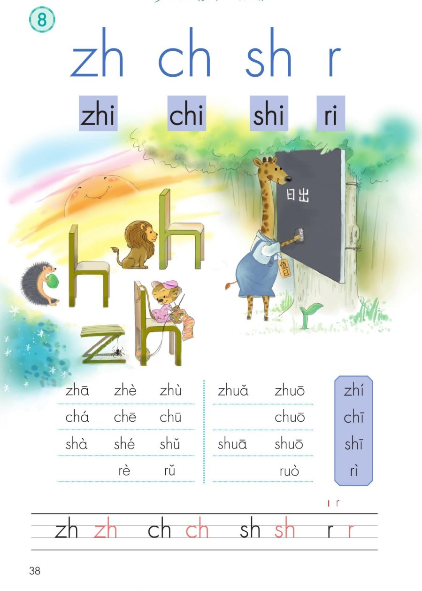
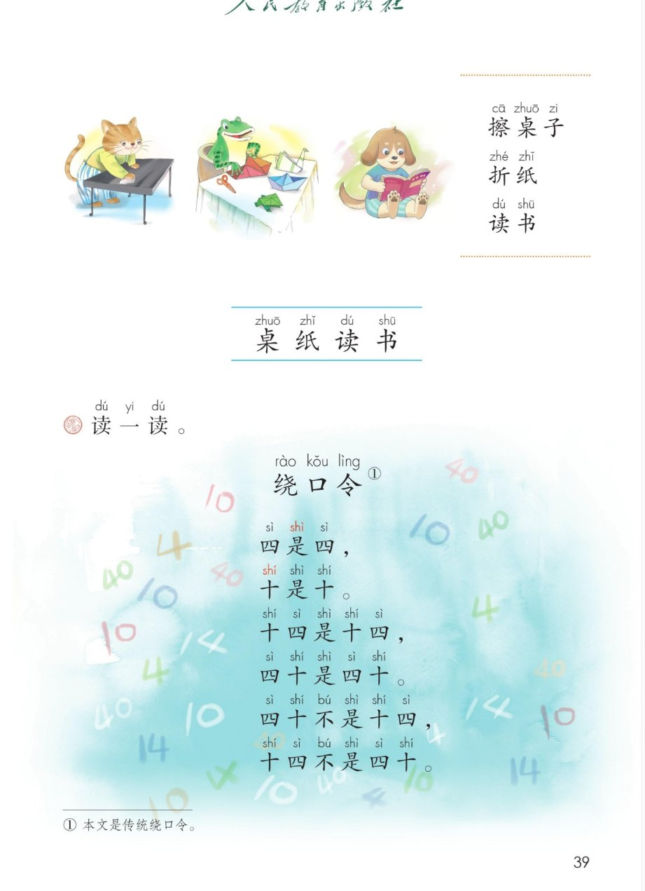

×
🔊 手机听不到声音怎么办？
① 先把手机
媒体音量调大 ，确认没开静音、没连蓝牙耳机；在微信里打开的，点右上角「⋯ → 用浏览器打开」。
② 还是没声音？到应用商店免费下载
Microsoft Edge 浏览器 （它自带朗读发声），用它打开本页面就能出声。
③ 换了 Edge 仍然没声音，说明这部手机的
硬件/系统不支持 网页朗读（多为老旧机型）；近几年买的新手机一般都能正常播放。
→ 打开声音自检
统编版 · 一年级上册 · 第三单元 · 汉语拼音 8
拼音 8 · zh ch sh r
四个声母：z 加 h 织毛衣，c 加 h 吃果子，s 加 h 狮子吼，小苗发芽 r
认声母 整体认读 翘舌音 绕口令 闯关 8 题
这一课学什么： 认识四个翘舌声母 zh、ch、sh、r 和四个整体认读音节 zhi、chi、shi、ri，
拼读书上的音节表（含三拼音节），读词语「擦桌子、折纸、读书」，再读绕口令《四是四》。发音方法以课本和老师教的为准。
课本第 38 页 点卡片听口诀，这四个都是翘舌音
平舌翘舌比一比： z c s 舌尖平放 （平舌音），zh ch sh r 舌尖上翘 （翘舌音）。织毛衣的织（zh）≠ 子弟的子（z）。👅
课本第 38 页 不用拼，一口读出来
zhi ·
chi ·
shi ·
ri
zhí：值日的值（第二声） chī：吃东西的吃（第一声） shī：老师的师（第一声） rì：日出的日（第四声）
💡 和上一课连起来记： 整体认读音节现在有 6 个——zi ci si zhi chi shi ，再加上以后的，一共 16 个。它们都是「一口读出来，不用拼」的老朋友！
带调认一认： 值日的值 （zhí）、吃东西的吃 （chī）、老师的师 （shī）、日出的日 （rì）。🎁
课本第 38 页 点一格读一格，右半是三拼音节
三拼音节复习： 声轻、介快、韵母响——zhuǎ 抓、shuā 刷、ruò 若，介母 u 站中间。🎯
课本第 38 页 先看写法，再动笔
课本第 39 页 点词卡跟读
连起来读
擦桌子 · 折纸 · 读书 ——小猫擦桌子，青蛙折纸，小狗读书，大家都爱劳动爱学习。
💡 这六个字都是这课和上几课学过的音节：cā 擦、zhé 折、zhǐ 纸、dú shū 读书。
课本第 39 页 点一行读一行，越读越快试试看
四是shì 四，
十是shì 十。
十shí 四是shì 十shí 四，
四十shí 是shì 四十shí 。
四十shí 不bù 是shì 十shí 四，
十shí 四不bù 是shì 四十shí 。
① 本文是传统绕口令。
🎵 全首连读
读一读，比一比： 「四」平舌、「十」翘舌，最容易混。先一个字一个字读准，再连行，最后提速——这是练平翘舌的最佳绕口令！🏁
点题目可以听题，点选项就判对错，答完自动算分
已经答 0 题，答对 0 题。
点图放大

第 38 页 · zh ch sh r · 整体认读 zhi chi shi ri · 音节表

第 39 页 · 擦桌子折纸读书 · 绕口令《四是四》